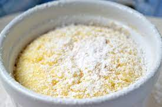

semolina dumplings - casserole

Description
Recipe to make semolina dumplings to serve with soup or a semolina casserole.
Ingredients
groundmass
- 1 1/2l milk
- 375g semolina
- lemmon skin
beaten mass
- 80g fat
- 150-180g sugar
- 4 egg york
easing mass
- 1TL backing powder
- 4 egg withe foam
Steps
- Groundmass: cook semolina with lemon skin in milk. Once the mass is cooking put down the heat and let simmer.
- Beaten mass: melt the fat and stirr in the sugar and egg york.
- Add the beaten mass to the groundmass and stirr them.
- Easing mass: while making egg white foam add the paking powder.
- Take the groundmass off the heater. Gently fold the easing mass in the groundmass.
-
You can either
- form semolina dumplings with two spoons
or
- serve the semolina mass as a casserole.
In both cases let the mass cool down and stabilize a bit.
Serving recommendation
You can serve the semolina dumplings with different soups.
If you want check out the buttermilksoup or the elderberrysoup.